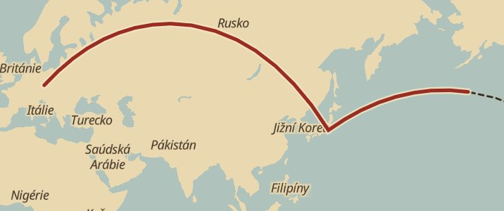

Kronika
Statistiky
Životní cesta
Výpravy
14 200
km
celkem od roku 2016
16
17
18
19
20
21
22
23
24
25
26
1 650 km
letos do října
3 912
dní se záznamem
24 km
nejdelší den
Životní cesta · Tichý oceán
5 100 z 8 300 km

© OpenStreetMap
Ještě 3 200 km do San Franciska. Při vašem tempu zhruba za 19 měsíců. Ověřeno 85 %, odhad z kroků 15 %.
Objevená místa
22 míst
✓
✓
✓
✓
✓
+ 17
Domů
Výprava
Objevovat
Kronika